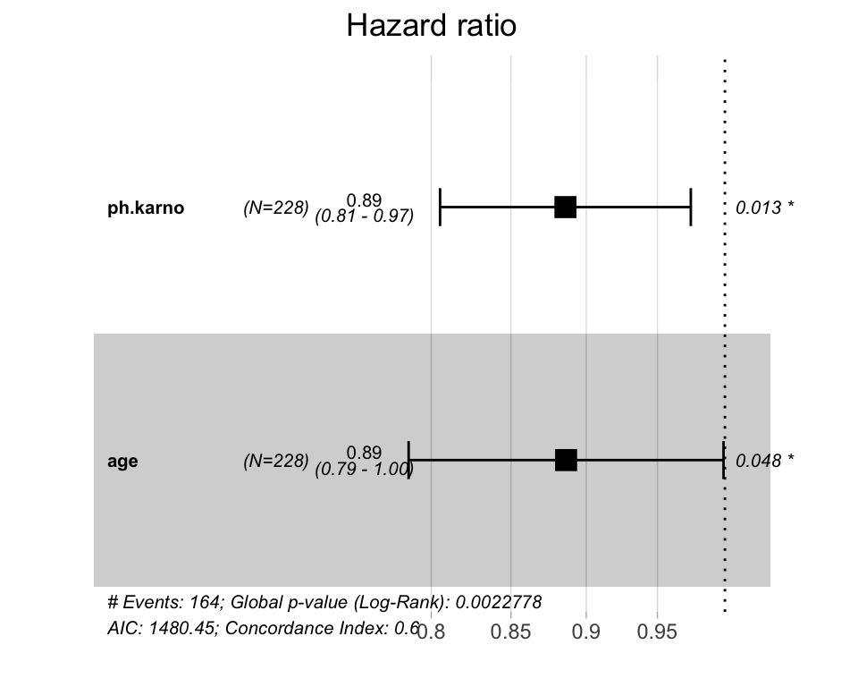
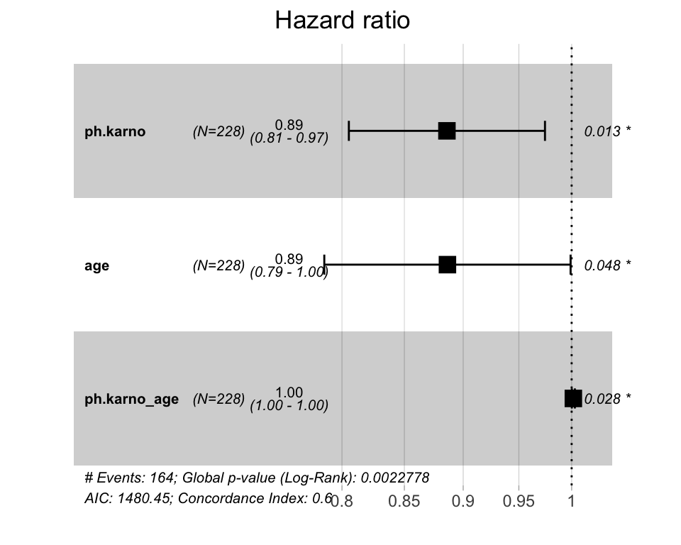

vignettes/ggforest-show-interactions-hazard-ratio.Rmd
ggforest-show-interactions-hazard-ratio.RmdIn general case it may be tricky to automatically extract interactions or variable transformations from model objects. A suggestion would be to create manually new variables that capture desired effects of interactions and add them to the model in an explicit way. This article describe an example of how to do this.
Call:
coxph(formula = Surv(time, status) ~ ph.karno * age, data = lung)
n= 227, number of events= 164
(1 observation deleted due to missingness)
coef exp(coef) se(coef) z Pr(>|z|)
ph.karno -0.1211782 0.8858761 0.0486092 -2.493 0.0127 *
age -0.1206758 0.8863212 0.0610426 -1.977 0.0481 *
ph.karno:age 0.0016586 1.0016600 0.0007525 2.204 0.0275 *
---
Signif. codes: 0 '***' 0.001 '**' 0.01 '*' 0.05 '.' 0.1 ' ' 1
Concordance= 0.598 (se = 0.025 )
Likelihood ratio test= 14.52 on 3 df, p=0.002
Wald test = 13.42 on 3 df, p=0.004
Score (logrank) test = 13.44 on 3 df, p=0.004Visualization of the hazard ratios using the function ggforest().
ggforest(res.cox, data = lung)

On the plot above, it can be seen that ggforest() ignores the interaction term ph.karno:age.
To fix this, a solution is to create manually the variable that handles the interaction:
lung$ph.karno_age <- lung$ph.karno * lung$age
and now you can fit an additive model and the ggforest() function will include it in the plot:
res.cox2 <- coxph(Surv(time, status) ~ ph.karno + age + ph.karno_age, data = lung) summary(res.cox2 , conf.int = FALSE)
Call:
coxph(formula = Surv(time, status) ~ ph.karno + age + ph.karno_age,
data = lung)
n= 227, number of events= 164
(1 observation deleted due to missingness)
coef exp(coef) se(coef) z Pr(>|z|)
ph.karno -0.1211782 0.8858761 0.0486092 -2.493 0.0127 *
age -0.1206758 0.8863212 0.0610426 -1.977 0.0481 *
ph.karno_age 0.0016586 1.0016600 0.0007525 2.204 0.0275 *
---
Signif. codes: 0 '***' 0.001 '**' 0.01 '*' 0.05 '.' 0.1 ' ' 1
Concordance= 0.598 (se = 0.025 )
Likelihood ratio test= 14.52 on 3 df, p=0.002
Wald test = 13.42 on 3 df, p=0.004
Score (logrank) test = 13.44 on 3 df, p=0.004ggforest(res.cox2, data=lung)
